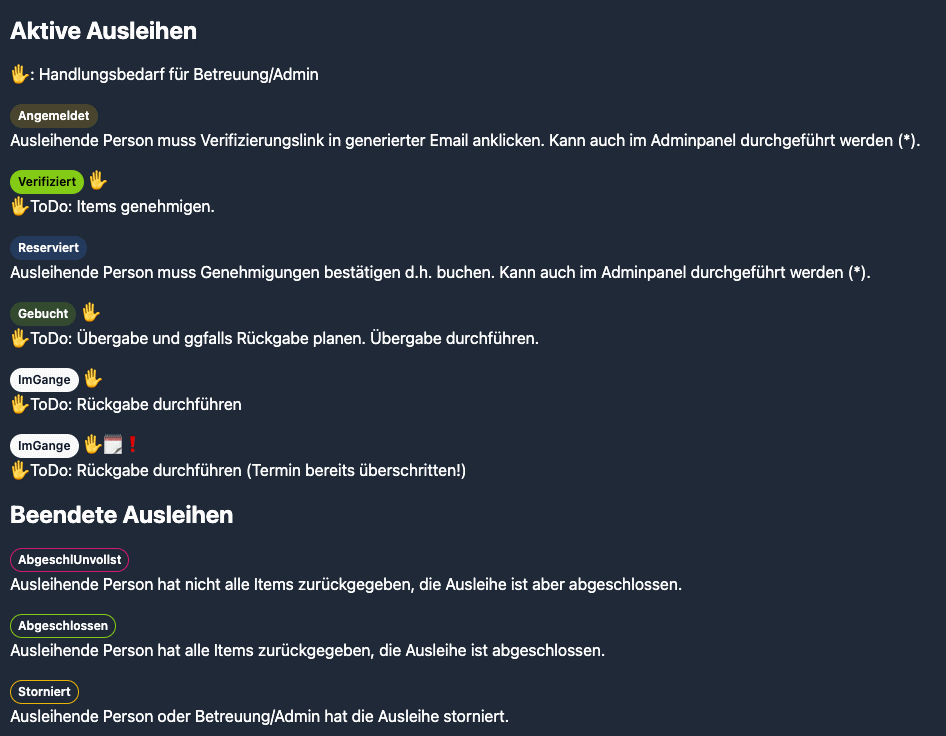
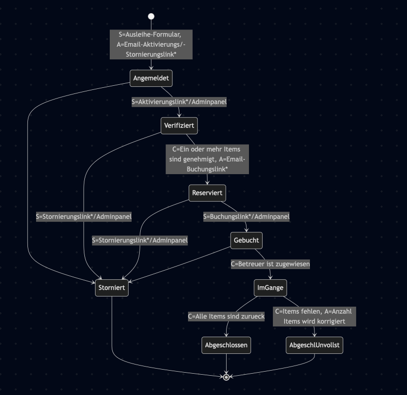
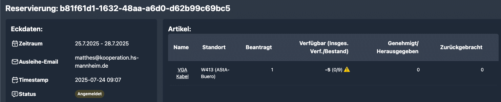
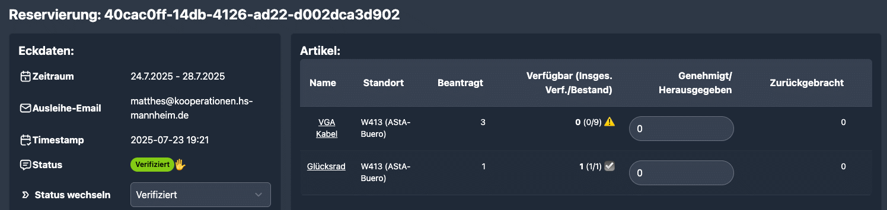
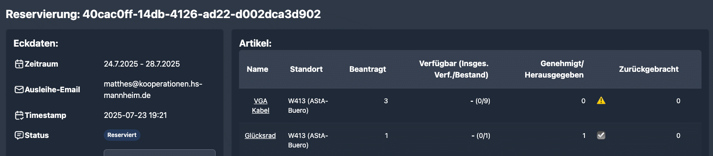
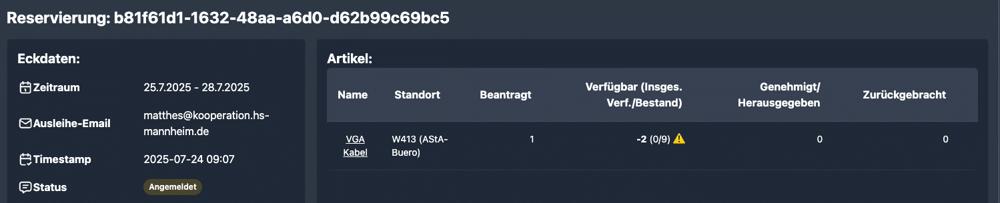

*) Dies sollte nur im Testfall oder in Absprache mit der ausleihenden Person im Adminpanel durchgeführt werden!
Dokumentiert in https://ausleihe.vs.hs-mannheim.de/admin/reservations/special

Dokumentiert in src/routes/reservation/readme.md
Legende:
S: Signal von außen, das zum Zustandswechsel (state transition) führt, sofern die Bedingung (condition) erfüllt ist.
Wenn nicht angegeben, ist das Signal die Zustandsänderung im Adminpanel.
C: Erforderliche Bedingung für den Zustandswechsel, nicht alle hier aufgeführt
A: Aktion, die von der Software beim Zustandswechsel ausgeführt wird, nicht alle hier aufgeführt

Die Werte “-5 (0/9)” von rechts nach links erläutert:
Ingesamt gibt es 9 Examplare im Bestand. Davon sind alle für diesen Zeitraum genehmigt oder noch ausgeliehen, d.h. 0 Exemplare sind ingesamt verfügbar. Aus Sicht dieser Ausleihe sind sogar theoretisch nur -5 Examplare verfügbar, weil es frühere Ausleihen in der Warteliste gibt.
Da die beantragte Anzahl nicht verfügbar ist, wird “Verfügbar” mit einem Warnschild gekennzeichnet.

Auch diese Ausleihe beantragt den gleichen Artikel “VGA Kabel” und ein “Glücksrad”. Wir genehmigen nur das Glücksrad:

Da die beantragte Anzahl nicht genehmigt wurde, wird “Genehmigt” mit einem Warnschild gekennzeichnet.
Wenn wir wieder zur zuerst gezeigten Ausleihe gehen, dann hat sehen wir eine Veränderung für “VGA-Kabel” von “-5 (0/9)” nach “-2 (0/9)”:

Da die 3 beantragten Examplare der früheren Ausleihe (vom 23. Juli) zuvor nicht genehmigt wurden und diese frühere Ausleihe in den Status “Reserviert” gegangen ist, wurden nun 3 Exemplare frei gegeben.
Es
sind jedoch immer noch Anträge in der Warteliste weiter vorne und
somit ist die Verfügbarkeit zwar von -5 auf -2 gegangen, aber immer
noch negativ.